도시에서 시골로 내려온 우리 손주! 이 작은 밭과 논, 낡은 집을 너에게 물려주마.
농약 없이 땅을 살리는 농사로 부자가 되어, 집을 초록 집으로 바꿔 보렴.
농약 없이 땅을 살리는 농사로 부자가 되어, 집을 초록 집으로 바꿔 보렴.
친환경 농사로 돈 벌고 · 집은 초록으로 꾸미고!
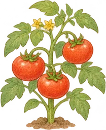
심고 · 돌보고 · 거두기도구를 고르고 밭을 눌러요. 다 자라면 반짝반짝!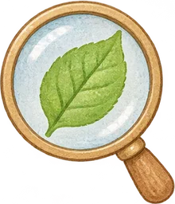
날마다 예찰하기숨은 해충 알을 돋보기로 미리 찾아 천연 방제제로 막아요.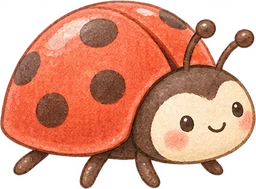
천적과 친구 되기무당벌레·칠레이리응애·우렁이·오리가 농약 대신 일해요.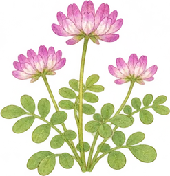
돌려짓기 · 녹비작물같은 과 작물을 연달아 심지 말고, 콩과 녹비로 땅을 살려요.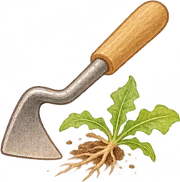
일손은 하루 8칸친환경 농사는 손이 많이 가요. 다 쓰면 하루를 마쳐요.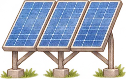
초록 집 꾸미기인증 농산물을 비싸게 팔아 태양광·1등급 가전을 사요!⏳ 30일 안에 탄소중립 마스터(만족도 100)가 되고 3일 동안 유지하면 엔딩! 빨리 해낼수록 점수가 높아요.
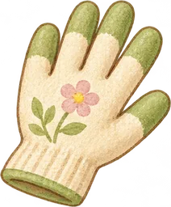
이웃에게 품삯을 드리고 오늘 일손을 늘려요. (하루 한 번)
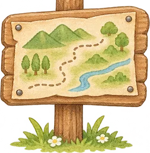
더 많이 벌지만, 그만큼 일손도 많이 필요해요.
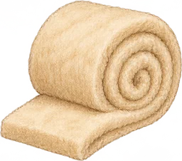
친환경 집 꾸미기 살림 비용을 줄여 줘요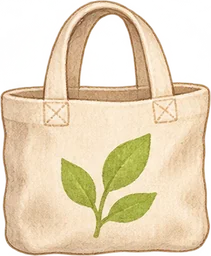
친환경 물건 생활 속 작은 실천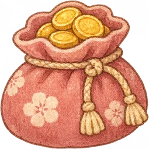
하루 살림 영수증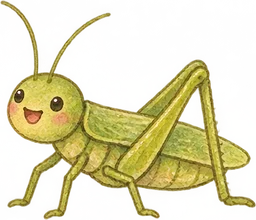
생물다양성흙이 건강하고, 농약을 쓰지 않은 날이 길수록 생물들이 돌아와요.
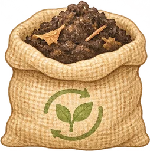
땅속에 저장한 탄소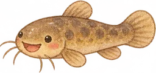
마을 하천 수질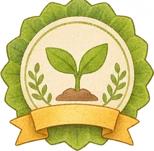
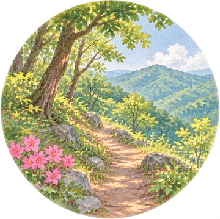
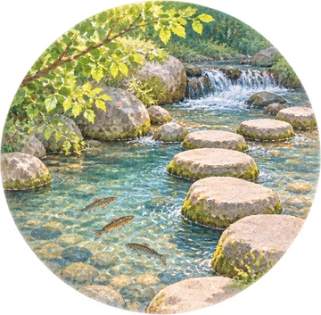
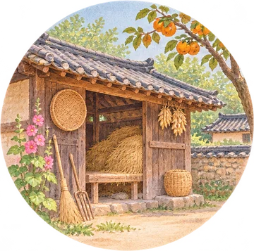
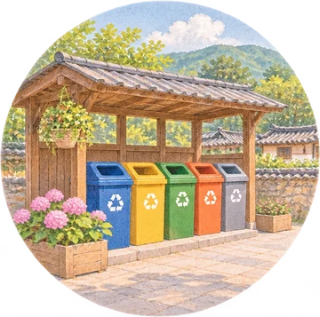
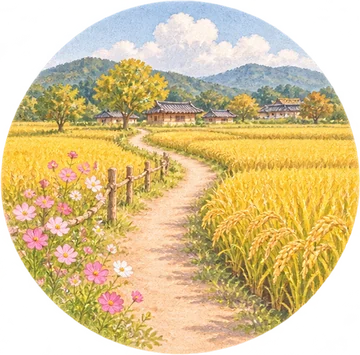
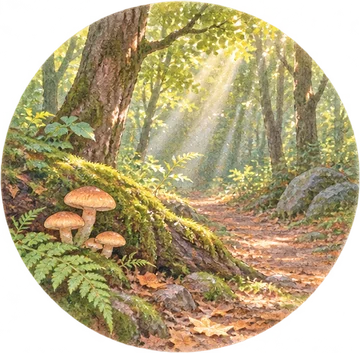
뒷산, 개울가, 할머니 헛간, 재활용 센터를 둘러봐요.
농사 재료나 씨앗을 주워 올 수도, 빈손으로 올 수도 있어요.
아주 가끔 귀한 물건이 숨어 있대요…!
자동으로 저장돼요 ·
잎을 눌러 들추고, 숨은 해충 알·해충을 찾아 눌러요! 무당벌레·거미·벌·나비·지렁이는 농장의 친구라 누르면 안 돼요.

친환경 생활을
실천합시다.